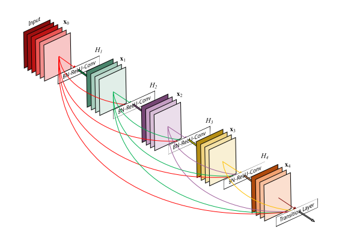
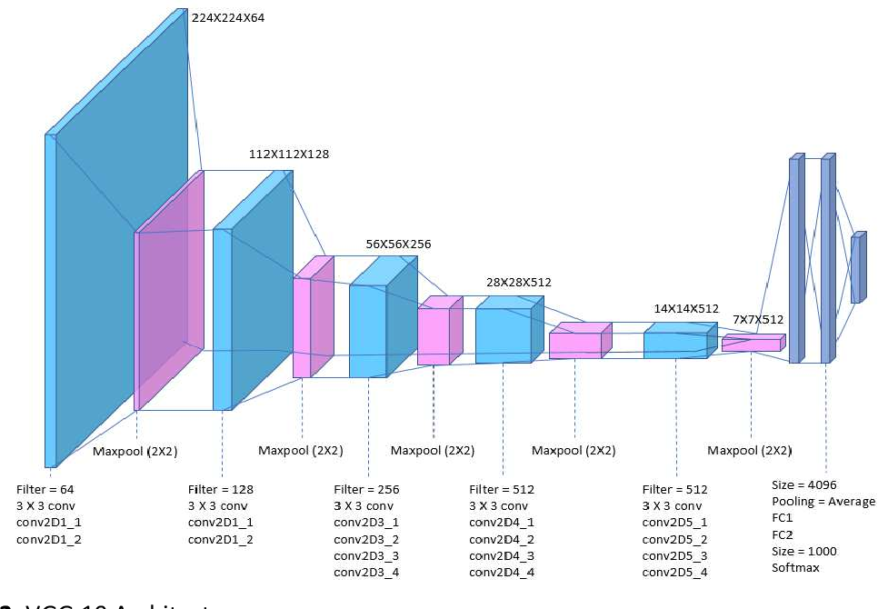

Algorithms Used for Model Training

DenseNet
DenseNet is a powerful deep learning architecture that efficiently extracts features from medical images. It fosters direct connections between layers, allowing for maximum information flow and minimizing the vanishing gradient problem. This results in highly accurate and robust models, enabling the identification of subtle patterns and anomalies in lung scans.

VGG19
VGG19 is a deep convolutional neural network with 19 layers, renowned for its ability to capture intricate details within medical images. Its deep architecture enables it to learn complex representations of lung tissue, aiding in the detection of subtle abnormalities. By leveraging the power of VGG19, LungVisionNet delivers precise and reliable diagnostic insights.

EfficientNet
EfficientNet is a state-of-the-art neural network architecture designed to balance accuracy and efficiency. It leverages a compound scaling method to uniformly scale network depth, width, and resolution, leading to significant performance improvements. By optimizing resource utilization, EfficientNet enables faster and more accurate analysis of medical images, facilitating timely diagnosis.